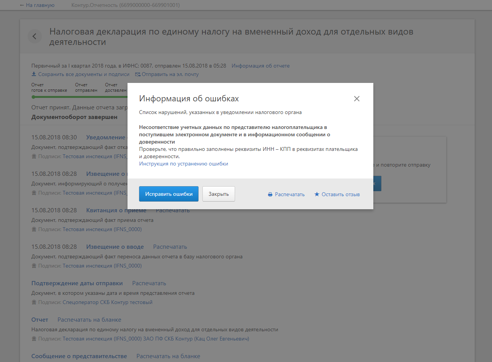
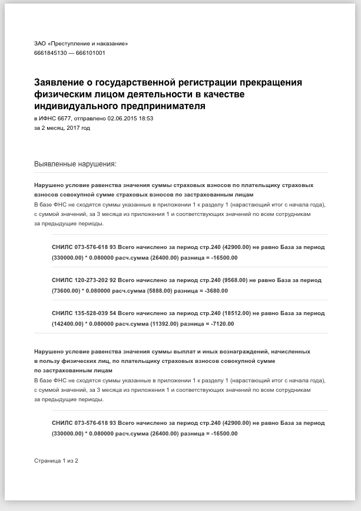

<!doctype html>
<html>
<head>
    <meta charset="utf-8">
    <meta name="viewport" content="width=device-width, initial-scale=1.0, maximum-scale=1.0, user-scalable=no">
    <link rel="stylesheet" href="reveal/css/reveal.css">
    <link rel="stylesheet" href="reveal/css/theme/kontur-light.css" id="theme">
    <!-- Theme used for syntax highlighting of code -->
    <link rel="stylesheet" href="reveal/css/highlight/idea-for-light.css">
    <link rel="stylesheet" href="reveal/css/highlight/darkula-for-dark.css">
    <!--[if lt IE 9]>
    <script src="reveal/js/html5shiv.js"></script>
    <![endif]-->
	<script defer src="reveal/js/head.min.js"></script>
	<script defer src="reveal/js/reveal.js"></script>
	<script defer src="reveal/initialize.js"></script>
	<script defer src="reveal/js/d3.min.js"></script>

    <style>
		.fragment-container {
			position: relative;
		}

		.fragment-container .fragment {
			position: absolute;
			top: 0px;
			width: 100%;
		}

        .tools.tools {
          margin: -30% auto 0;
          height: 100vh;
          display: block;
        }
    </style>

	<title>Печать документов</title>
</head>
<body>

<div class="reveal"><div class="slides">

<section data-markdown><script type="text/template">

# Печать документов на стороне клиента

<p style="text-align: center;"><a href="https://github.com/vanyaraspopov/print-with-react">https://github.com/vanyaraspopov/print-with-react</a></p>

</script></section>

<section data-markdown><script type="text/template">

### Постановка задачи

Есть стандартное TODO приложение


***

Нужно вывести задачи на печать согласно прототипу


</script></section>

<section data-markdown><script type="text/template">

### Простое решение

Можно использовать css медиа-запрос `print`

```css
@media print {
  ...
}
```

переопределить в нём все классы, приведя страницу к виду прототипа, и вызвать метод

```js
window.print()
```

</script></section>

<section data-markdown><script type="text/template">

### Реальный случай

Информация, которую нужно напечатать, тянется с сервера и показывается в модальном окне


***


<div style="text-align: left; float: left;">
  
</div>

<div style="text-align: left; float: right;">
  <p data-markdown>
    Прототип печатной формы
  </p>
  <span class="fragment fade-in">можно попробовать
    `visibility: hidden` для всего,
    кроме печатной формы</span>

  <span class="fragment fade-in">⚠️ проблемы с box size</span>
  <span class="fragment fade-in">⚠️ возможны конфликты стилей</span>
</div>

</script></section>

<section data-markdown><script type="text/template">

### Решение

0. Для печатной формы документа создаём React-компонент, который содержит логику отображения документа
0. При клике на кнопку "Печать" создаём новый фрейм
0. Рендерим компонент в этот фрейм
0. Вызываем print у фрейма
0. PROFIT!

<span class="fragment fade-in">⚠️ есть проблемы с подключением стилей</span>

</script></section>

<section data-markdown><script type="text/template">

<a href="https://github.com/gregnb/react-to-print">https://github.com/gregnb/react-to-print</a>
### ReactToPrint - Print React components in the browser

So you've created a React component but would love to give end users the ability to print out the contents of that component. This package aims to solve that by popping up a new print window with CSS styles copied over as well.

### Install

`npm install react-to-print --save-dev `

***

### Использование ReactToPrint

```js
class Example extends React.Component {
  render() {
    return (
      <div>
        <ReactToPrint
            trigger={() => <a href="#">Печать</a>}
            content={() => this.componentRef}
        />
        <TodoListPrintView ref={el => (this.componentRef = el)} />
      </div>
    );
  }
}
```

***

Проблемы

0. остутствует интерфейс для вызова функции печати
0. нам не нужны все стили родительского окна
0. конфликты с глобальными стилями

</script></section>

<section data-markdown><script type="text/template">

### Реализация

Функция печати

```js
import {render} from 'react-dom';

export function print(reactComponent) {
    const frame = document.createElement('iframe');
    frame.style.display = 'none';
    document.body.appendChild(frame);
    const _window = frame.contentWindow;
    _window.document.body.appendChild(_window.document.createElement('div'));
    render(reactComponent, _window.document.body.children[0]);
    _window.print();
    document.body.removeChild(frame);
}


```

***

Пишем стили в компоненте внутри тега `style`

```js
import React from 'react';

export default function TodoListPrintView(props) {
  return (
    <div>
      <style>{`
        .container {
          ...
        }
      `}</style>
      <div className="container">
        ...
      </div>
    </div>
  );
}
```
<span class="fragment fade-in">🙁 хочется подсветки синтаксиса</span>
<span class="fragment fade-in">🙁 хочется использовать препроцессоры</span>

***

Правила в конфигурации webpack

```js
{
  test: /\.less$/,
  exclude: /\.print\.less$/,
  use: ['style-loader', 'css-loader', 'less-loader'],
},
{
  test: /\.less$/,
  include: /\.print\.less$/,
  use: ['css-to-string-loader', 'css-loader', 'less-loader'],
},
```

стили, которые должны быть преобразованы в строку, обозначаются суффиксом `.print`

***

Код компонента печатной формы

```js
import React from 'react';

const css = require('./TodoListPrintView.print.less');

export default function TodoListPrintView(props) {
  return (
    <div>
      <style>{css}</style>
      <div className="container">
        ...
      </div>
    </div>
  );
}
```

- в переменной `css` содержатся стили компонента
- полная изоляция стилей

</script></section>

<section data-markdown><script type="text/template">

## Спасибо за внимание

Ссылки
- презентация <a href="https://github.com/vanyaraspopov/print-with-react">https://github.com/vanyaraspopov/print-with-react</a>
- ReactToPrint <a href="https://github.com/gregnb/react-to-print">https://github.com/gregnb/react-to-print</a>
- webpack-загрузчик стилей в виде строки
<a href="https://www.npmjs.com/package/css-to-string-loader">https://www.npmjs.com/package/css-to-string-loader</a>

</script></section>

</div></div>
</body>
</html>
